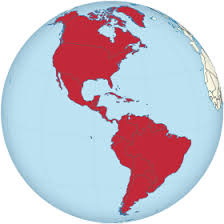
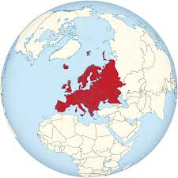
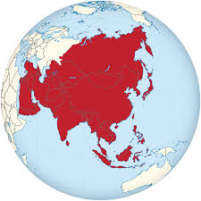
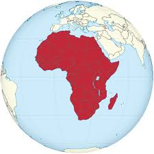

En la actualidad, cerca de 6.000 animales están en peligro de extinción. La acción del ser humano está detrás de la posible extinción de estos animales motivada por la caza ilegal o la destrucción de hábitats donde residen.
CONOCE MAS ACERCA DE
Extincion animal en America
Extincion animal en Europa
Extincion animal en Asia
Extincion animal en Oceania
Extincion animal en Africa
